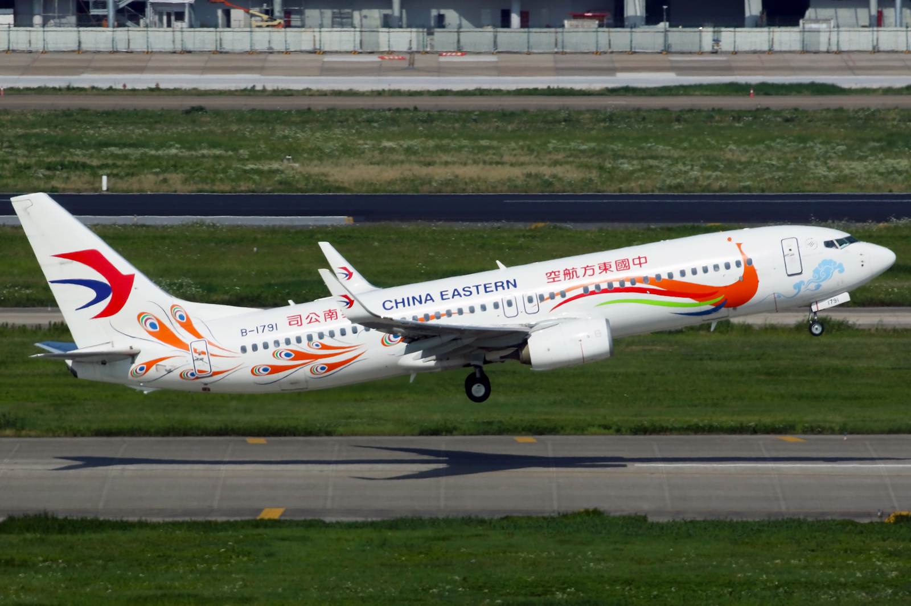

重要时间
首飞：1967.4.9
起役：1968.2.10
737
737
波音737是一款中短程、双发动机窄体喷气客机，原本是波音707和波音727的衍生机型，为一款低操作成本的短程民用飞机，至今发展出14个型号。
波音737的构想始于1964年，首架波音737-100于1967年首飞，1968年2月投入服务。-200型于同年四月亦投入服务。在1980年代，波音着手研发737“经典型”的-300、-400和-500。波音737经典型不但增加了载客量，还采用较先进的CFM56涡轮风扇发动机等设备。在1990年代，波音公司开始研发737“新世代”，改良措施包括重新设计机翼，先进的驾驶设备，及全新的客舱。波音737新世代有七种型号：-600、-700、-700C、-700ER、-800、-900和-900ER，并设有商务机型BBJ。
波音737是民航界史上最畅销的客机之一，主要生产线是在华盛顿州的波音伦顿厂房。许多航空公司订购737，来取代旧式的707、727、757、DC-9和MD-80/90，目前主要竞争对手是空中客车A320。波音737的成功，从此数据可以得知：平均每秒钟有1,250架波音737正在飞行，每五秒就有一架进行起降。
波音737型客机的生产量已达1万架，是当今全球生产数量首达1万架的商用喷气机型，打破吉尼斯世界纪录。
波音公司（Boeing）在当地时间2018年3月13日发布的新闻稿指出，第1万架的波音737型客机（N8717M），是拨交给美国西南航空公司（Southwest Airlines）的波音737 MAX
8。
参数信息
机型
737-100
737-200
737-300
737-400
737-500
737-600
737-700
737-800
737-900
737 MAX-7
737 MAX-8
737 MAX-9
737 MAX-10
飞行员数
2
二级典型座位数（座位间距）
85 :
12F 73Y
102 :
12F 88Y
126
147
110
108
128
160
177
138
162
178
188
一级最大座位数（座位间距）
108（34in）
115(34in)
130(30in)
140
168
132
130
140+
175+
215
153
178
193
204
座位宽度
17.2吋（一级6列座位量）
长度(米)
28.6
30.53
33.4
36.4
31.0
31.24
33.63
39.5
42.11
35.56
39.47
42.16
43.79
翼展
28.3米
28.88米
35.79米
35.92米
高度
11.3米
11.13米
12.6米
12.29米
后掠翼
25°
25.02°
展弦比
8.83
9.16
9.45
机身宽
3.76米
机身高
4.01米
座舱宽
3.54米
座舱高
2.20米
空重
61,864磅
73,040磅
68,860磅
80,031磅
84,100磅
91,108磅
98,495磅
最大起飞重量
108,218磅
149,710磅
133,210磅
145,500磅
基本型： 154,500磅ER型： 171,000磅174,200磅
187,700磅
最大降落重量
99,000磅
124,000磅
110,000磅
121,500磅
128,928磅
146,300磅
载货量
650立方呎
1,373立方呎
822立方呎
756立方呎
966立方呎
1,591立方呎
1,852立方呎
起飞所需跑道长度（于最大起飞重量时）
6,646呎（1,990米）
8,483呎（2,540米）
8,249呎（2,470米）
8,016呎（2,400米）
8,283呎（2,480米）
8,181呎（2,450米）
实用升限
35,000呎
37,000呎
41,100呎（12,527米）
巡航速率
0.74马赫（485mph／780km/h）
0.785马赫（514mph／828km/h）
0.78马赫（511mph／823km/h）
最大速率
0.82马赫（544mph／876km/h／473节）
满载航距
1,860海里（3,440公里）
2,165海里（4,005公里）
2,402海里（4,444公里）
3,050海里（5,648公里）
基本型： 3,365海里（6,230公里）
反翼版： 3,900海里（7,220公里）ER型： 5,375海里（9,955公里）
3,060海里（5,665公里）
一级布置：2,700海里（4,996公里）
最大燃料容量
4,725加仑
6,130加仑
6,296加仑
6,875加仑
7,837加仑
发动机（x2）
普惠JT8D-7
CFM 56-3B-2
CFM 56-3B-1
CFM 56-7B20
CFM 56-7B26
CFM 56-7B27
CFM 56-7
发动机最大推力（x2）
19,000磅（84.5千牛顿）
22,000磅（97.9千牛顿）
20,000磅（89.0千牛顿）
20,600磅（91.6千牛顿）
26,300磅（116.0千牛顿）
27,300磅（121.4千牛顿）
发动机巡航推力（x2）
3,870磅（17.21千牛顿）
4,930磅（21.92千牛顿）
4,902磅（21.805千牛顿）
5,210磅（23.18千牛顿）
5,480磅（24.38千牛顿）
风扇翼尖直径
1.12米
1.52米
1.55米
发动机长度
3.20米
2.36米
2.51米
发动机离地高度
51公分
46公分
48公分
乘坐体验（视频）
VIDEO
人们关心的：737安全吗？
VIDEO
737OG和737CL的方向舵设计曾有重大缺陷，在经过极端的温差，即3万呎高空的-50摄氏度至地面的30摄氏度（假设）时，就有可能会被卡住甚至完全反转。此缺陷曾造成联合航空585号班机空难、全美航空427号班机空难、东风航空517号班机事故，前两起空难共造成157人死亡，只有东风航空航机侥幸逃过一劫，1992年的中国南方航空3943号班机空难和1997年胜安航空185号班机空难也被疑为是此原因导致。在东风航空517号班机事故调查结束后，波音修改了所有737OG/CL的尾舵设计，并全球性地为服役中的737OG/CL客机更改有关零件，波音公司也要求所有使用737的航空公司对飞行员进行应对方向舵失控的专业培训。但在东风航空517号班机事故发生9年后的2008年，美国大陆航空1404号班机则在跑道上因大风导致飞机侧滑出跑道并引起大火，从而导致部分人员认为其坠毁原因与之前的两起空难有着相似原因。
2013年4月15日，美国联邦航空管理局基于波音737NG和所有更改过新尾舵的737OG/CL存有安全隐忧，其水平机翼（Horizontal
stabilizer）翼后梁有部分螺栓的防护涂层在制造过程中程序出错，可能导致螺栓松脱，影响飞行安全，严重者会导致飞机失控。因此，向美国所有航空公司发出在同年5月20日起生效的指令，要求检查旗下的波音737NG，包括自737-600开始的所有5个型号，但之后却不了了之。直到2019年9月部分737NG发现在飞行过程中水平尾翼部分脱落而紧急降落后，FAA才重新要求检查全数737NG的水平尾翼。但就在不久后，在9月下旬为中国公司使用的737-800系列客机进行改装737-800BCF时，在拨叉“Pickle
Fork”上发现结构性裂缝，长期发展可能导致空中解体。之后美国官方下令检查全美165架波音737
NG型客机。波音表示对给航空公司造成的影响深表遗憾，希望积极与客户合作解决“结构性裂缝”问题。同月美国西南航空证实检查过程发现旗下2架飞机同处有裂缝停飞，巴西高尔航空也预防性紧急停飞11架同型客机。韩国三家航空公司也停飞9架出现结构性裂缝的波音737NG客机。
新在2018年10月29日狮子航空610号班机空难发生不久后，FAA发现全球目前所有的737MAX（包含正在试飞的737 MAX 7和全系BBJ
MAX）新增了一个MCAS系统，在失速及翻滚保护系统以防止机头仰角过大而失速或者发生翻滚下坠以及倒飞等现象，而当这个系统被无意触发后即使解除自动驾驶也会导致飞机下坠将近10秒钟，且飞机难以控制。但在737MAX系列的飞行手册和训练项目中并未提及此系统，且737MAX的操作与737NG系列基本相同导致许多飞行员或者从737NG系列转训到737MAX的飞行员根本不知道这个系统的存在。在此之后美国联邦航空管理局紧急发布737MAX的适航指令，要求所有737MAX和BBJ
MAX客户必须立即更换飞行手册。但在2019年3月10日，埃塞俄比亚航空302号班机再次以与狮航610号班机完全相同的过程坠毁。该两次事故开始导致各国开始担心737MAX系列甚至所有更早型号的737CL/OG/NG是否会发生相同的类似空难（因为737OG/CL依然有大量第三世界国家使用有设计缺陷的尾舵，而737NG至今的水平尾翼设计缺陷依然未给出合适的解决方案），而目前全部54个使用波音737
MAX的国家已全部停飞。2019年3月26日，尽管波音已向737 MAX客户展示了新的MCAS系统，但因西南航空8701号班机事故而导致停飞再次被延长，而中国民用航空局更是直接下令暂时撤回波音737
MAX系列的适航令。
受到737MAX机型两起事故及后续停飞事件影响，2019年4月5日，波音宣布，从4月中旬开始，暂时把737飞机的产量从之前的每月52架减至42架，降幅近20%。
2019年4月，EASA报告说埃航302在起飞发现异常后已经关闭了MCAS系统，但后因手动配平轮失灵才重新打开了MCAS系统。目前暂时无法确认水平尾翼是否有设计缺陷。但如果确认了配平轮失灵是由于水平尾翼卡死导致，停飞潮将有可能扩散到全部737系列，包括早期的737OG与737CL，以及上一代737NG。
2019年6月2日，波音官方表示部分飞机机翼零件不符合官方标准，而其中21架波音737NG与20架波音737MAX可能专有此零件。目前波音已经紧急联系航司更换零件并额外检查112架737NG和159架737MAX。
2019年6月26日，波音宣布在其模拟飞行测试中另一设计缺陷同样也会导致机头自动下压而发生俯冲。
MU5735空难：永远不会公开的真相

基本信息
时间：2022.3.21
地点：广西梧州
737-800
737-800
中国东方航空5735号班机是一趟由昆明长水机场飞往广州白云机场的中国大陆国内线客运航班，北京时间2022年3月21日，一架执飞该航班的波音737-800型客机（注册编号：B-1791）在巡航途中突然快速下降并失联，最终在14时23分坠毁于广西壮族自治区梧州市藤县埌南镇莫埌村的一处山林，造成123名乘客和9名机组人员全数遇难，而这宗空难被中华人民共和国政府命名为“‘3·21’东航MU5735航空器飞行事故”。
多方援引美媒消息人士报道，并根据在酒店发现的副机长遗书，得知客机可能是飞行员蓄意操纵坠毁
。客机的两部飞行记录仪（俗称黑匣子）均已寻获。事发一周年，民航局例行通报时表示事故“非常复杂、极为罕见”。事发三周年，中华人民共和国官方失事调查报告未按时更新。同年6月，网传一份盖有中国民航局综合司公章的《政府信息公开申请答复书》，宣称调查进展情况“
公开后可能危及国家安全、社会稳定 ”，因此不予公开。
这是中国大陆死亡人数第三的航空事故（前二为1994年中国西北航空2303号班机空难和1992年中国南方航空3943号班机空难），中国东方航空死亡人数最多的航空事故，亦是2022年死亡人数最多的航空事故。此次事故终结了中国大陆自伊春空难以来11年多来首次超过1亿小时的世界最长民航持续安全飞行时长记录。
VIDEO
VIDEO
 Aviation Wiki ✈
Aviation Wiki ✈